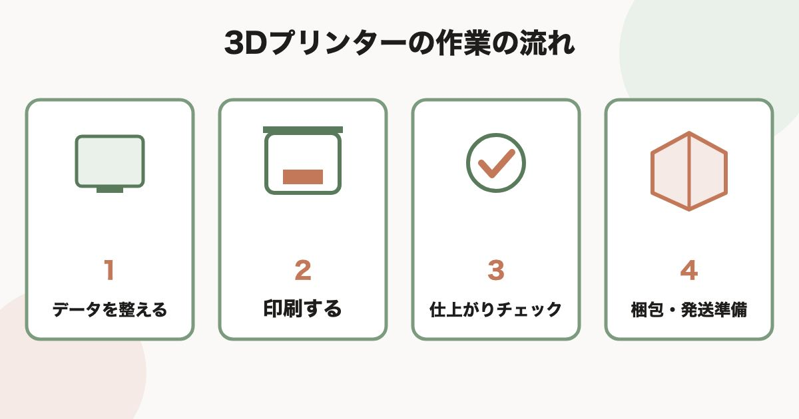

結論：3Dプリンターの作業は、パソコン作業から手作業まで役割が分かれています
LICOの作業室には3Dプリンターがあり、スマホケースや名刺入れといったオリジナルグッズを製作しています。お客様から届いた写真やデザインを使って、世界にひとつだけの品に仕上げるのが特徴です。作業はいくつもの工程に分かれているので、自分の得意な部分から参加できます。
作業の流れ：データ作成から梱包まで

- データを整える：お客様の写真やデザインを、印刷できる形にパソコンで調整します。
- 印刷する：3Dプリンターにセットして、印刷を行います。
- 仕上がりチェック：色や形に問題がないか、目で見て確認します。
- 梱包・発送の準備：商品をていねいに梱包して、お届けできる状態にします。
パソコン操作に強い方はデータ作成、目が細かい方は検品、手作業が好きな方は印刷や梱包、というように、得意な工程を見つけやすい構成です。体調の良し悪しに応じて、負担の少ない工程を選ぶ日があっても構いません。
お客様に届く商品を作る意味
仕上げたグッズは、商品として購入者の手に渡ります。ペットや家族の写真を使った注文もあり、大切な記憶に関わる品だからこそ、仕上がりをていねいに確認する作業にやりがいがあります。「自分の仕事が、誰かの喜びにつながっている」という実感は、続けるうえでの大きな励みになります。

3Dプリンターの作業が向いている人
- 手を動かすものづくりが好き
- 仕上がりの細かい部分が気になるタイプ
- 機械や新しい道具に興味がある
- 画面だけでなく、形のある成果物を作りたい
福岡市西区で3Dプリンターの作業を選ぶ良さ
3Dプリンターは、使い方を覚えると「データが形になる」過程を目の前で見られる機械です。画面の中だけで完結しない作業なので、手応えを感じやすいという声があります。また、工程が分かれているため、体力や集中力に合わせて作業の量を調整しやすい点も特徴です。毎日の通所を続けるうえで、「今日はこの工程ならできそう」と選べる余地があることは、安心感につながります。
見学のときに聞いておきたいこと
- 自分が興味のある工程（データ作成・印刷・検品・梱包）に、どう関われるか
- 作業の覚え方（マニュアルの有無、スタッフのサポートのしかた）
- パソコンが初めての場合、どこから練習できるか
見学では、疑問をそのまま質問してください。作業室の雰囲気も、あわせて確認できます。
品質へのこだわりがやりがいに
オリジナルグッズは、お客様が手に取る商品です。ほんの少しの色の差や、形のずれにも気づける目は、この作業ならではの強みになります。「細かいところが気になってしまう」という性格は、ここでは長所として活かせます。
動画編集との組み合わせ
LICOでは、一つの作業に限らず、複数の作業を経験しながら自分に合うものを探せます。たとえば、午前はパソコンで動画編集、午後は3Dプリンターの検品や梱包、といった選び方を、希望として伝えてみてください。
福岡市西区・今宿でものづくりができるB型事業所をお探しの方は、見学で実際の機械や作品を見て、イメージをつかんでください。
よくある質問
- 3Dプリンターを使ったことがなくてもできますか？
- 未経験でも大丈夫です。最初から機械を任せるのではなく、基本操作から段階的に進めます。
- パソコンが苦手でも3Dプリンターの作業はできますか？
- 作業は、データを整える、印刷する、検品する、梱包するなど複数あります。パソコンが得意な方も、手を動かすのが得意な方も、それぞれ活躍できる場面があります。
- 見学のときに機械や作品を見られますか？
- はい。見学では、機械の実物や完成した作品をご覧いただけます。